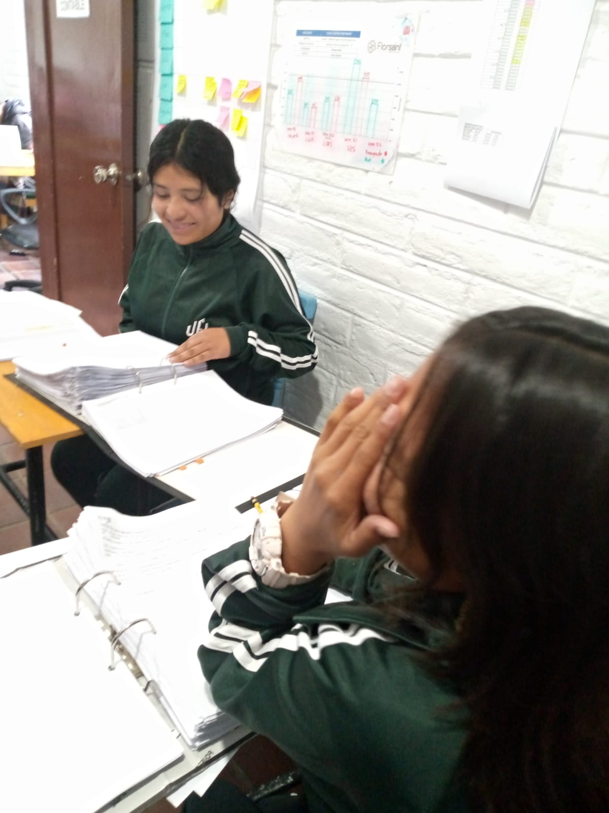
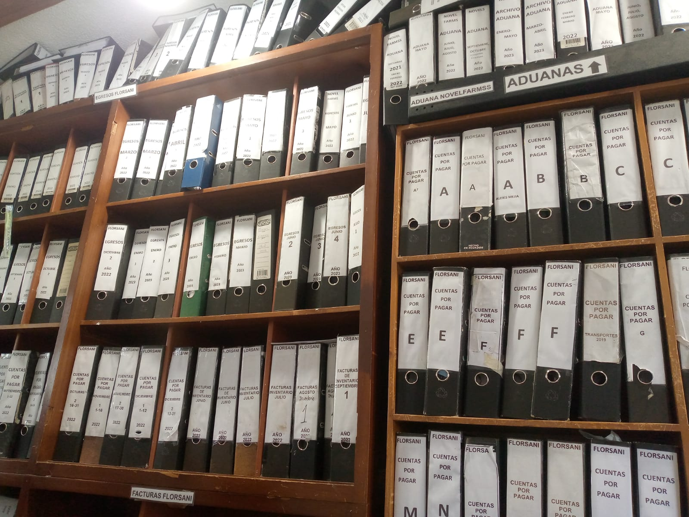
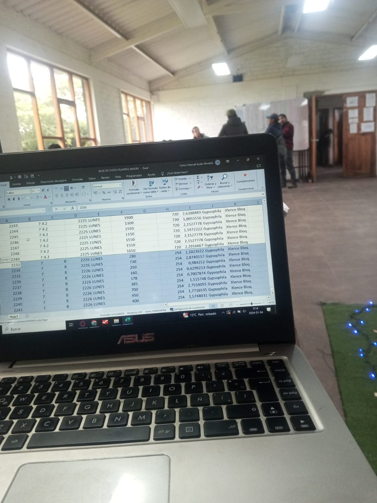
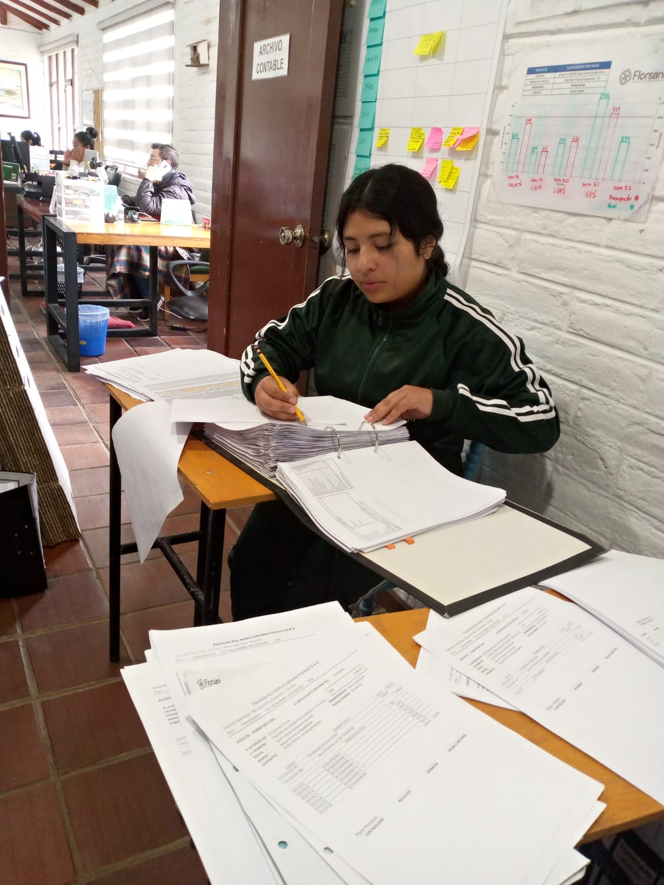

EXPERIENCIAS
EXPERIENCIAS DE PRACTICAS EN FLORSANI
Nombres y Apellidos: Julissa Calpa
Dirección Domiciliaria Florsani San Isidro
- Mi experiencia en el primer día en la empresa de Florsani fue muy bonita ya que me tocó en la área que yo quería ir, en contabilidad junto con mi compañera Emili, las dos estábamos muy nerviosas ya que no sabíamos como era el trabajo ahí y también teníamos mucho miedó porque habían muchas oficinas las cuales estában divididas en ESTADISTICA,TALENTO HUMANO,ETIQUETAS, LOGISTICA,MANTENIMIENTO Y MAS.

- Al segundo día el Ingeniero Don Beto nos dió una capacitación sobre Archivos de comprobantes de Egresos,archivo de facturas, archivo de comprobantes de pago la capacitación duro 25 minutos y luego ya nos pusimos a trabajar en la oficina de Archivos

- En la oficina de Archivos se encontraban demasiadas carpetas cada carpeta estába ordenada por fechas y meses del año.

- En este día realizé la Verificación de datos en el sistema Venture, de la Empresa de Novel, gracias a la capacitación que nos dió el ingeniero Don Beto pude realizarlo todo muy bien sin ninguna complejidad, lo que tenia que realizar fue lo siguiente Aqui ingresamos a la pagina Venture. sirve para descargar facturas de gastos de la empresa y cada uno de
los vendedores. Lo que yo debía descargar cada una de las facturas con los comprobantes y poner el código que ya venía con su respectivo proveedor.

- En este dia tuve que estar sola verificando las facturas, cómo las verificaba? por medio de códigos, nombres, el valor total y por la fecha verificaba todo esos datos porque en unos casos eran los mismos compradores pero eran diferentes valores de pago, estas hojas tenia que encontrarlas en las carpetas que estában archivadas en la oficina de contabilidad se divididan por meses del año y como ya estában divididas por fechas era un poco mas fácil de encontrar y con las hojas que encontraba tenía que volver archivar con la hoja de factura, la hoja de comprobante y la hoja de egreso en una carpeta y asi ytenia que hacerlo con todas las hojas

-